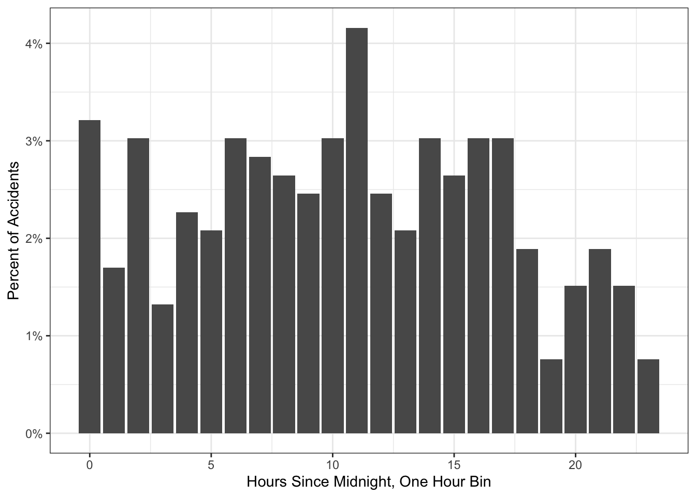

The following analysis is based on a database of rail accidents scraped using an undocumented API which underlies the National Transportation Safety Board website. To narrow the scope of my initial analysis, I focused on the date and time of accidents. I found that accidents spiked at 11am, standardizing to local time at the location of each accident. Strikingly, accidents remained largely consistent throughout the other 23 hours of the waking day, with slight dips overnight.
suppressPackageStartupMessages({library(tidyverse)source('https://raw.githubusercontent.com/declanrjb/declanrjb-r/refs/heads/main/functions.R')})df <-read_csv('data/ntsb-full_clean.csv', show_col_types =FALSE)hours_table <- df$Time_Of_Day %>%hour() %>%value_counts() %>%arrange(Val) %>%mutate(Norm = Norm *100)# a spike occurs around 11am, just before lunchggplot(hours_table, aes(x=Val, y=Norm)) +geom_col() +theme_bw() +xlab("Hours Since Midnight, One Hour Bin") +ylab("Percent of Accidents") +scale_y_continuous(label = scales::label_number(suffix ="%"))
Warning: Removed 1 row containing missing values or values outside the scale range
(`geom_col()`).

I found this spike to be statistically significant using a chi-squared test against a model that assumed an even distribution by the hour of day.
hours_table <- hours_table %>%filter(!is.na(Val)) %>%mutate(Expected =1/24)chisq.test(hours_table$N, p = hours_table$Expected)
Chi-squared test for given probabilities
data: hours_table$N
X-squared = 35.423, df = 23, p-value = 0.0472
I propose several possible explanations for this phenomenon:
Base Rates: More trains are actively on the rails at 11am compared to other times of day. Then the proportion of trains that experience accidents might remain the same regardless of the time of day, even though the number appears higher. This can be verified or falsified with further work.
Time Dependence: Variation in the number of trains running does not correlate with the spike, in which case one of the following may be true:
It is possible that Amtrak shift changes frequently occurr around 11am. A tired crew about to get off the train, or alternatively a green crew not familiar with the train they just boarded, may be more likely to experience accidents.
Other parties in accident scenarios, such as station personnel, may be more likely to take their lunch breaks around 11am. Understaffed stations may experience more accidents.
Further investigation could establish whether the time of day frequently plays a role in rail accidents. If a correlation is found, I see several possible impact angles. Railroad administrators could stagger lunch breaks and/or shift changes in order to minimize the disruption associated with the lunch hour. If we establish another correlation not proposed here, such a finding could also be incorporated into policy, hopefully reducing the number of serious rail accidents.